France
Bugatti
Created in Molsheim, Alsace, by Ettore Bugatti in 1909, Bugatti is one of the most iconic names in motoring. The brand builds a handful of hypercars each year, blending extreme performance and craftsmanship.
- Founded
- 1909
- Models
- 23
- Generations
- 24
- In production
- 1
- generations
- Photos
- 23
Hypercars
Bugatti Chiron Sport
Bugatti Chiron Super Sport 300+
Named after the first 300 mph run by a road car, in 2019.
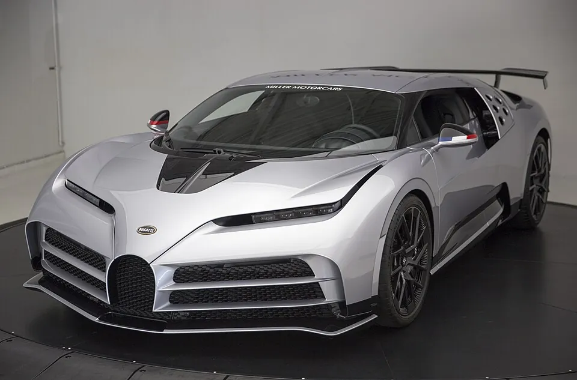
Heritage

One-offs and curiosities
Bugatti La Voiture Noire
One-off unveiled in 2019, a tribute to the Type 57SC Atlantic.


Bugatti Vision Gran Turismo
Designed first for a video game, then built as a real show car.
LEGO Technic Bugatti Chiron
A life-size, drivable Chiron built from over a million LEGO Technic parts (2018).
All models and generations
20 models, each with all its generations.
In production
Past models
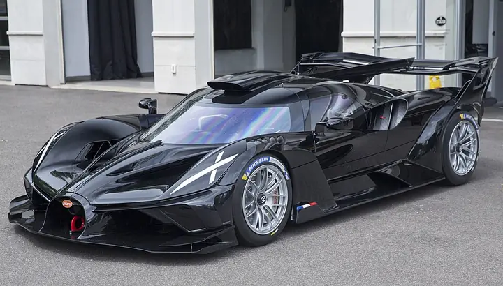
Bugatti Bolide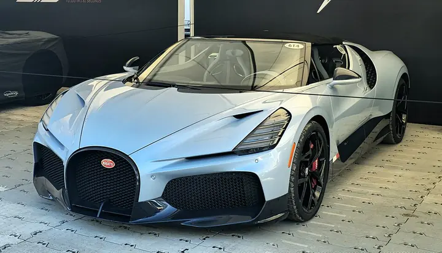
Bugatti Mistral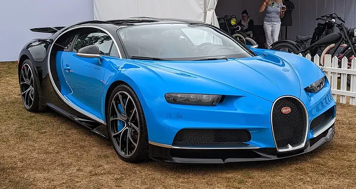
Bugatti Chiron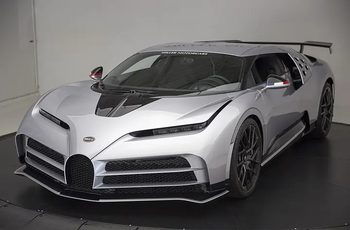
Bugatti Centodieci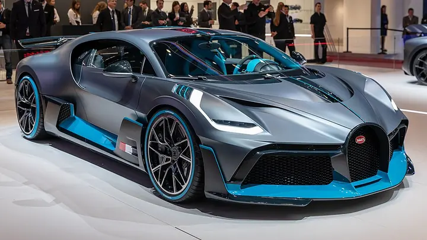
Bugatti Divo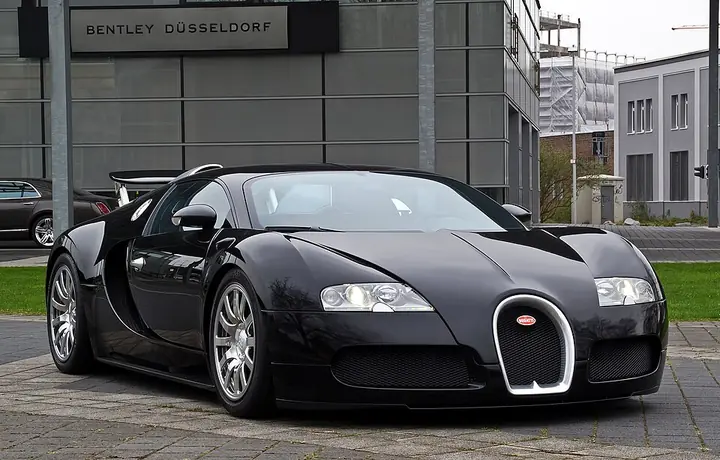
Bugatti Veyron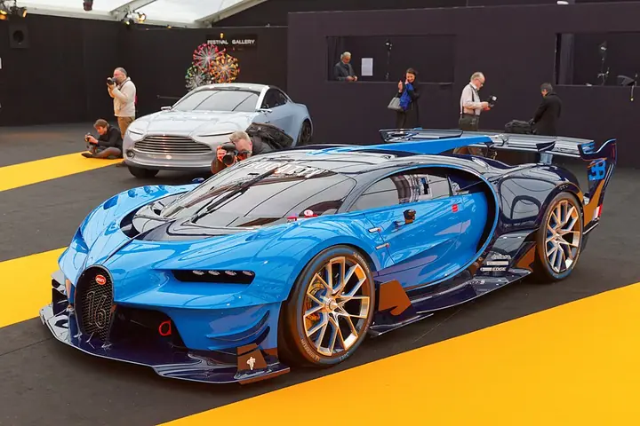
Bugatti Vision Gran Turismo- Bugatti EB 110
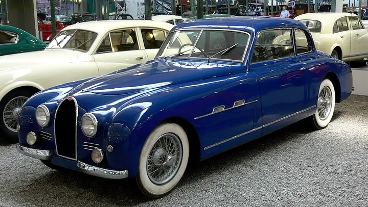
Bugatti Type 101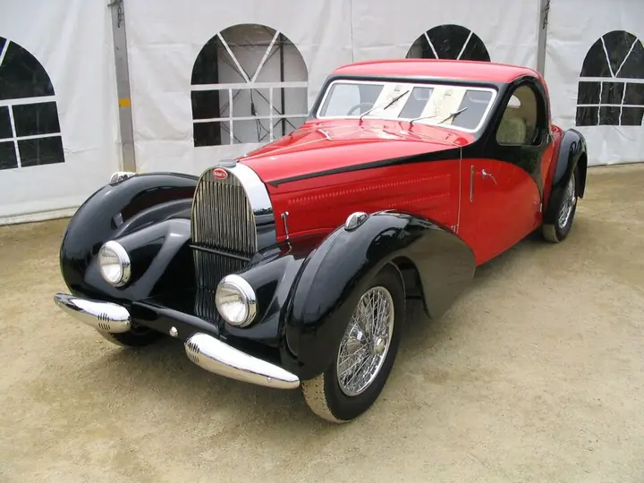
Bugatti Type 57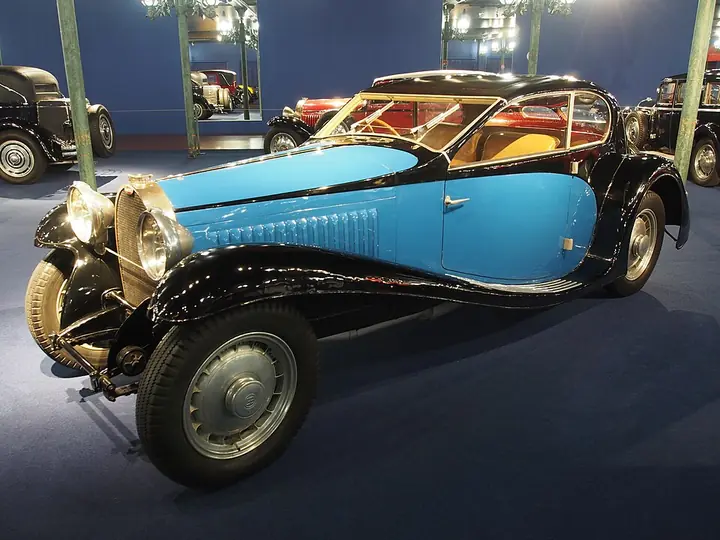
Bugatti Type 46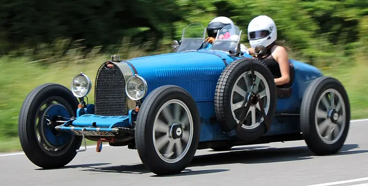
Bugatti Type 51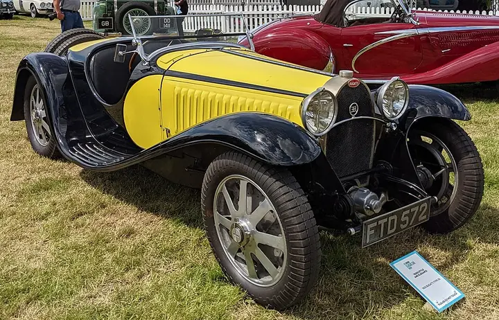
Bugatti Type 55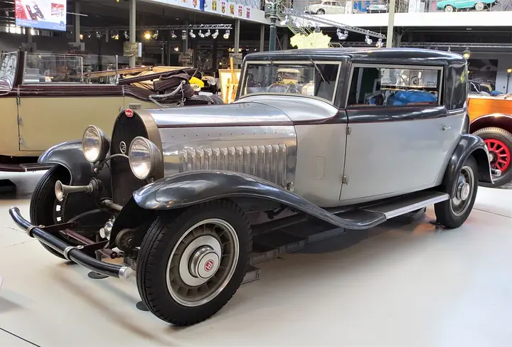
Bugatti 8-cylinder line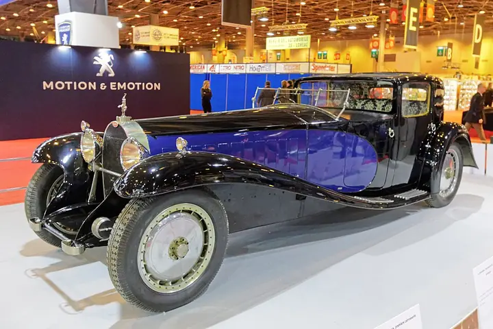
Bugatti Royale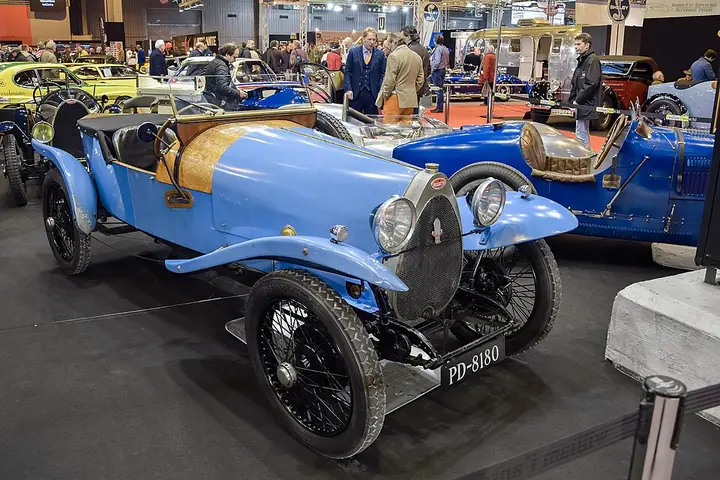
Bugatti Type 13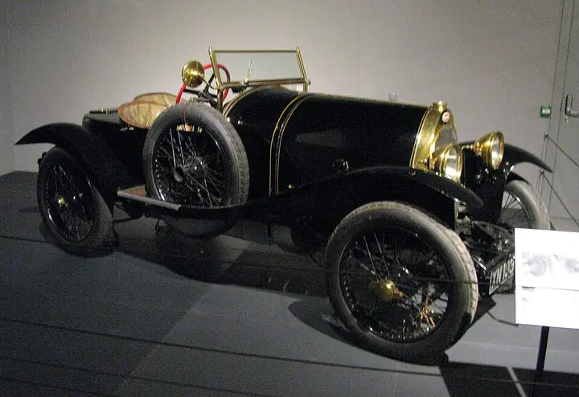
Bugatti Type 18- Bugatti Type 8
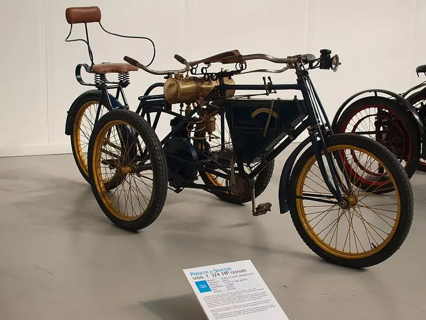
Bugatti Type 1
Racing cars
3 racing cars: Formula One, endurance, rally and touring.
Source: Wikipedia, CC BY-SA 4.0.


.jpg){kind=link}

.jpg){kind=link}
,_5._April_2012,_D%C3%BCsseldorf.jpg){kind=link}
.jpg){kind=link}